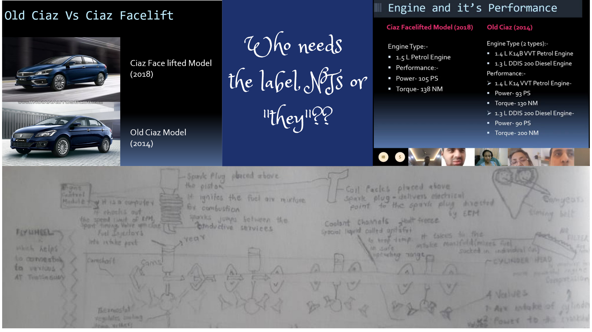

It was difficult to focus; had his graduation final exams in a week’s time; kept getting distracted.
I asked whether he wanted to present one of his PPT presentations, that he had created some time back, to his friends on our Orchvate social platform. He was excited - decided to present Maruti Ciaz new Facelift Model. Refreshed his research on Sigma, Delta, Zeta, Alpha, Ciaz S; wanted to ensure he was able to answer questions on any variant.
I remember asking him once “Do you write all this data anywhere” …he seriously had said “Yes, I do” and on probing clarified - " I do it in my head - in separate files.
Presentation went well – never read any slide. Kept walking around while presenting and the neurotypical NT me insisted that he sits in one place – possibly because it was bothering me!! Said much more than was on the slides; when the NT me got impatient and jumped to the next slide he politely yet firmly asked me to go back. This happened 2 to 3 times, he told me I needed to stay on the slide till he said Next. In all these years he had got used to dealing with the NT me.

On the evening before the exams I wished him all the best, and asked him how he felt – he said he was nervous – I was expecting the response and I explained that it was a natural feeling. He said he was sad - I was not expecting this response. It was going to be the last exam of his life. NT me laughed asked him not to joke. He said he was serious.
The day after the exams I told him to do some research on how the car engine works. He instantly got to work and later sent me a complex, impressive diagram of the engine. I asked whether he had got it from internet – Google. He clarified, internet, YouTube. He had watched a video on how the engine works and the picture was all over his brain. He thought it would be good to put it on paper lest it fades away after a few years. It was so big and all over the place that he was not able to fit it on one page and so he used 2A4s!!
I just gifted him an online course on Automotive Design. In half a day, he has finished it and is now politely insisting that I should gift him the next level.
Neurodiversity creates magic - Let's embrace it
Where will you get an NT who can store so much in the brain and focus so crazily on something. You give "them" an area of their interest - the focus is unbeatable, and the memory is unfailing.
No NT would want to start studying the next day after exams got over. NTs would want a break. You give them the work "they" want to do – and they need no breaks.
For a generic PPT an NT would never research on the variants. "They" always ensure perfection; they don't understand shortcuts.
NTs wouldn't think of engaging in something that was not related to studies a week before the final exams, because NTs want good grades. "They" are motivated for reasons they know best. It is not to do well in the exams that’s for sure.
Who needs the label, NTs or "they"??